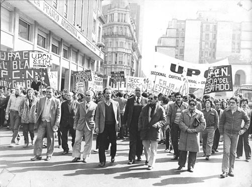
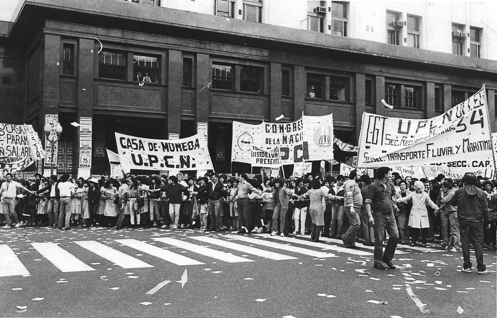
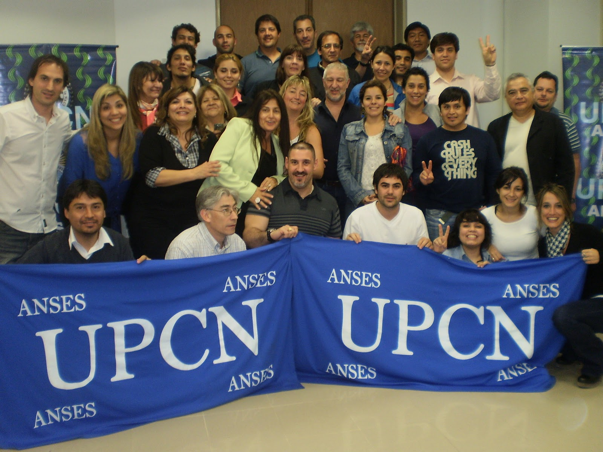
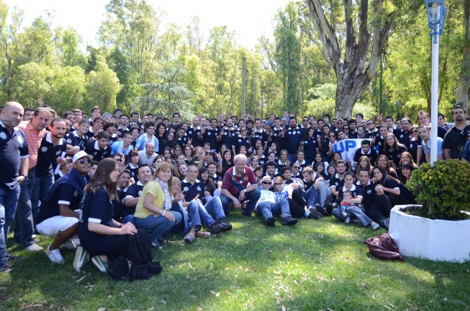

UPCN
Quienes somos
La Historia de la UPCN
1930-1951 - Orígenes de la organización sindical
Podemos decir que los antecedentes que dan origen a la Unión del Personal Civil de la Nación (UPCN) se remontan a la década de 1930 con la Liga Argentina de Empleados Públicos (desarrollaba actividades mutuales, culturales y deportivas, entre otras) y la Confederación del Personal Civil de la Nación. Durante 1948 con el General Perón en la Secretaria de Trabajo y Previsión, esa Liga se empieza a transformar en una semi organización gremial. En ese año, se otorgan las personerías gremiales a la mayoría de los gremios que hoy están en vigencia. Nosotros poseemos la N°95
En el despacho del actual Secretario General, puede observarse un cuadro que guarda la ficha de solicitud de afiliación como socio del General Juan Domingo Perón, cuando se incorpora a nuestro sindicato en el año 1951, quien en ese momento cede, no transfiere, la casa central de UPCN, situada en la Capital Federal, en la calle Moreno, que era propiedad de la Dirección Nacional de Arquitectura, la que por entonces era considerada monumento histórico y hoy está reconocida por el Gobierno de la Ciudad de Buenos Aires como patrimonio cultural. Esta casa pasó a ser propiedad del gremio en el año 1974, a raíz de un proyecto de ley que fue presentado por el primer diputado nacional por la CGT que tuvo UPCN, el entonces Secretario General de Jujuy, el compañero Martínez.
1966-1970 - Intervención del gremio
En los años 1966/1970 UPCN estuvo intervenida, en una de las tantas intervenciones que tuvo nuestro gremio. Esto trajo aparejado la designación de un normalizador, con la posterior elección del compañero Héctor López.
El viejo Estatuto, posibilitaba que donde hubiera 200 afiliados, cualquiera fuera el área, se formaba una seccional. Por esa época, teníamos en ministerios nacionales 8, 10,12 o 15 secciónales. En algunas provincias, como el caso de Santa Fe, hasta había coordinadores para estas seccionales.
1974-1975 - Unificación del sector público nacional
En 1974, se crea una Federación Argentina de Trabajadores Estatales (FATE), que no fue reconocida por el Ministerio
de Trabajo de la Nación, que nucleó a sectores nacionales y algunos sindicatos provinciales.
UPCN con Héctor López como Secretario General, comienza a planificar la posibilidad de absorber FATE. Aquellas
provincias que habían formado una asociación o sindicato podían llegar a ser incorporadas por FATE
(cuando lograra su personería) o por UPCN. Tras 6 o 7 meses de tareas de convencimiento se logro incorporar a Jujuy,
Río Negro, Formosa, y Corrientes. Estos gremios provinciales condicionaron su acceso, pidiendo la modificación
en el Estatuto, de la cláusula que establecía la condición de tener 200 afiliados para constituir
una seccional.
El compañero López tuvo la visión de integrar al país y para ello luchó y trabajó
encuadrando muy duramente hasta sus propias seccionales. Durante el congreso realizado en Córdoba en 1974, a raíz
de esta propuesta de modificación del estatuto, la mayoría de las seccionales nacionales que no estaban de
acuerdo, le piden la renuncia a López, por lo que se hace cargo de la conducción el compañero Villafañe
(Secretario Adjunto).
En octubre de ese mismo año en el congreso realizado en Mar del Plata, como ya había ganado consenso la
idea de unificar el sector publico nacional, se hace la modificación del Estatuto, para producir el achicamiento
de la cantidad de seccionales existentes y se logra establecer un nuevo estatuto de la Unión donde se plantea un
sector público nacional y otro sector público provincial, quedando una seccional por provincia, y en el sector
publico nacional una seccional por ministerio. En el termino de 8 meses, esas seccionales por ministerio iban a conformar
una única seccional nacional, que es la que tenemos hoy.
En el año 1975, UPCN vuelve a ser intervenido durante el gobierno de la señora María Estela Martínez
de Perón, estando Villafañe como Secretario General.
1981-1984 - Normalización y democracia
En 1981 se empieza a hablar de democracia y de devolver a los gremios la conducción sindical a través de comisiones
normalizadoras.
En octubre de 1982 se designa, a nivel nacional, una comisión normalizadora para reemplazar al Capitán de
Navío que administraba nuestro gremio.
Esa comisión fue integrada por los compañeros Miguel Candore, Andrés Rodríguez, Rómulo
Barreno, Carlos Quintana, Ramón Saz de Larrechea, Enrique Baccalini, Horacio González, Humberto Trisano y
Juan C Olivares.
La Comisión Normalizadora funcionó desde octubre de 1982 hasta 1984, donde se convoca a las primeras elecciones
del periodo democrático iniciado en 1983, resultando electos, el 4 de octubre de ese año, los compañeros
Miguel Candore como Secretario General, Rómulo Barreno como Secretario Adjunto y Andrés Rodríguez
como Secretario Gremial.
Es de destacar que los mismos recibieron, de manos de la dictadura militar de ese momento, un gremio vaciado, en un estado
caótico y deplorable con muy pocos afiliados y que, luego de 20 años de democracia política y sindical,
se ha logrado un crecimiento que posicionó al mismo entre los mejores y más grandes sindicatos de la Argentina,
brindando a los trabajadores públicos y su familia salud, capacitación, formación sindical, defensa
de su salario y una nueva legislación laboral acorde a las demandas de la época.
1990-2014 - Consolidando un nuevo UPCN
En 1990 hay nuevamente elecciones y, por tercera vez, Miguel Candore es electo Secretario General y Alberto Maguid, Secretario Adjunto. Pero, ante la renuncia del compañero Candore para asumir la presidencia de INOSE (Instituto Nacional de Obra Social de Empleados del Estado) se acuerda la asunción de los compañeros Andrés Rodríguez y Carlos Quintana como Secretario General y Adjunto respectivamente, nuestra actual conducción.
En esta etapa, que llega hasta nuestros días, dirigentes de UPCN han contribuido permanente y significativamente
a la unidad de la CGT y del Partido Justicialista; han creado, en la República Argentina, el Frente de Gremios Estatales;
han ocupado, y ocupan, cargos relevantes en las instituciones mencionadas y en los poderes Legislativo y Ejecutivo en sus
diferentes niveles, han participado activamente en la Organización Internacional del Trabajo (OIT), en la Internacional
de Servicios Públicos (ISP), en el Congreso Latinoamericano de Administración para el Desarrollo (CLAD),
etc. En fin, podemos decir que estamos construyendo un nuevo sindicato integrado sólidamente a la sociedad y al
mundo en que le toca actuar.
Durante más de medio siglo los trabajadores protagonizaron hechos históricos y fueron partícipes de
grandes cambios como no los hubiera imaginado la mente más febril. Desde aquellas primeras luchas sindicales pasando
por la intervención de la última dictadura militar y el periodo democrático, nuestra organización
atravesó todas las pruebas dando muestras cabales de ingenio, sacrificio y solidaridad. Nada logró quebrar
la voluntad de afiliados y dirigentes, quienes preservaron el espíritu de justicia social, democracia y participación
que dio origen a nuestra Unión, en una vasta geografía con hombres y culturas diversas, pero solidariamente
unidos en una organización sindical desplegada a lo largo y ancho de la patria, sustentando la fuerza de nuestro
origen y la amplitud de nuestro futuro.
En esta reseña queremos tributar el más sentido homenaje a todos aquellos que, desinteresadamente y con
pasión, hicieron posible la vigencia de esta organización, mayoritaria en el espíritu de los empleados
públicos argentinos.
Conscientes de que el sindicalismo es necesario e imprescindible, y recordando nuestra historia, revalidamos nuestro compromiso
de acción solidaria junto a los empleados públicos argentinos que cotidianamente bregamos hacia un
ESTADO DE TODOS CON TODOS.
¡Lo que sigue, lo estamos construyendo entre todos con el mismo espíritu de solidaridad y justicia social
que siempre nos ha guiado!